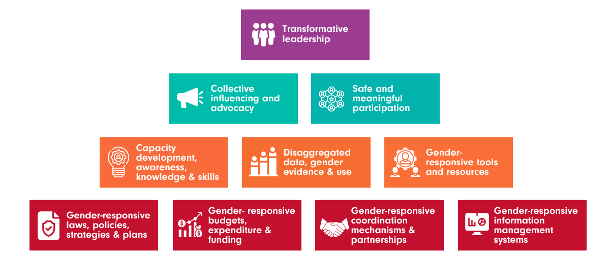

Accessibility menu
Content for the offcanvas goes here. You can place just about any Bootstrap component or custom elements here.
What is the WRD Programme?
The Women's Resilience to Disasters (WRD) programme proposes a comprehensive package to strengthen women’s resilience to disasters and threats, including climate change and COVID-19.
The WRD programme aims to render the lives and livelihoods of women and girls resilient to disasters and threats, contributing to sustainable, secure, and thriving communities. The objective is for WRD countries to adopt gender-responsive decision-making and governance systems, and enable targeted action to build the resilience of women and girls.
The WRD programme is being implemented in the Pacific with sister programmes in other regions. Fiji, Kiribati, and Vanuatu are the initial WRD countries in the Pacific.
The Women’s Resilience to Disasters Programme is a crucial landmark for boosting women’s voice, and agency in disaster and climate risk reduction and resilience building; with game-changing potential for gender equality, women’s empowerment and leadership.
Who is the WRD Knowledge Hub for?
The WRD Knowledge Hub has been developed for disaster risk reduction, climate change adaptation, gender, social inclusion, resilience, women’s rights organisations, policy-makers, and practitioners worldwide, while providing useful material to all those interested in learning more about gender-responsive disaster prevention, mitigation, preparedness, response, recovery, and risk informed development.
Why a WRD Knowledge Hub?
Disasters are not uniformly felt by everyone.
Gender, age, disability, ethnicity, sexual orientation, income, geography, age, social marginalisation, and other socioeconomic factors shape an individual’s vulnerability to disaster and climate risks. Recent research highlights differential disaster impacts for women and girls. Across the board, from life expectancy to education, health, safety, job security, and nutrition - women and girls are disproportionately impacted.
Both slow-onset climate changes (such as drought) and sudden-onset weather events (such as flash floods) have complex and differentiated gender impacts.
Structural gender inequalities are at the root of disproportionate disaster and climate impacts.
They limit the capacities of women and girls to reduce risks and to prepare and recover from disasters. Gender-specific barriers (linked to socioeconomic and political realities, as well as cultural norms), obstruct women and girls from acquiring and accessing the means and capacities needed to build resilience to disasters; reinforcing vulnerabilities. For example, early warning systems, which do not consider gender differences have proven ineffective and heighten women’s disaster risks.
Disasters exacerbate many of the gender inequalities that exist in societies
Women’s empowerment and leadership is missing in disaster and climate risk governance.
Women have been shown to demonstrate extraordinary powers of resilience during disasters, but are consistently under-represented in disaster risk reduction, climate change adaptation, and resilience decision making processes at all levels. Yet, women are key agents of change, with unique knowledge. They can play key roles in more effectively and sustainably reducing risks, preparing for multiple hazards, ensuring risk informed recovery from disasters, and increasing community resilience to future disasters and threats.
Women’s leadership brings essential knowledge, skills, resources, and experiences to resilience building.
Women’s grassroots organisations are key to addressing disaster and climate risk.
Women’s local and national representative organisations and gender advocates are often the most knowledgeable of the specific risks, needs, and priorities of communities. Their absence from relevant planning and implementation processes and processes undermines achievement of critical ambitious identified in the post-2015 agreements.
What gaps will the WRD knowledge hub fill?
Critical gaps remain in the evidence base.
A recent UN Women and UNICEF study, Gender and age inequality of disaster risk, found significant gaps in the availability, quality, comparability, and relevance of quantitative and qualitative data - disaggregated by gender, age, and disability. This represents a significant barrier to understanding and analysing the granularity between groups and their differential risk impacts to inform decision making.
The WRD team is supporting research and capacity development to fill these gaps in the knowledge and evidence base across the WRD Thematic Framework
Critical gaps in knowledge management, access, and uptake of tools on the gender dimensions of risk.
Until now, existing information has been spread among different custodian agencies, projects and platforms limiting opportunities for peer learning, and sharing stories, women’s voices, good practices, lessons, and tools across regions to support replication and upscaling.
The WRD knowledge hub centralises knowledge, expertise, and increases access to tools on women’s resilience to disasters.
Critical governance and systems-levels gaps.
Significant governance and systems-level gaps including gender-responsive legal, policy, and financial frameworks, systems, and processes impede inclusive and gender-responsive resilience. Building an enabling environment for gender-responsive decision making and action requires several "enablers of change." The WRD Knowledge Hub shares the latest research and tools for building the enabling governance environment for women’s resilience to disasters.
Critical gaps in gender-responsive and transformative action.
Despite increased recognition of the importance of gender equality and inclusion for resilience building and recent progress developing gender-responsive normative frameworks and commitments; this is not always translated into concrete plans and action. Implementation of action plans and delivery of commitments to gender equality and social inclusion remains an important gap. If disaster and climate risk reduction, and resilience are not gender-responsive and do not include and empower women, the impacts of disasters and threats will compound and aggravate existing gender inequalities.
A multi-hazard, coordinated and gender-responsive approach is needed
One which cuts across traditional silos and:
- tackles the underlying root causes of vulnerability to disasters and threats;
- amplifies women’s voices, collective influencing, and advocacy;
- promotes women’s leadership, meaningful participation, and agency;
- supports coordinated action across stakeholders and levels; and
- ensures a continuum of support across risk prevention, mitigation, preparedness, response, recovery, and resilient development.
The WRD knowledge hub will support transformative action for women’s resilience to disasters.